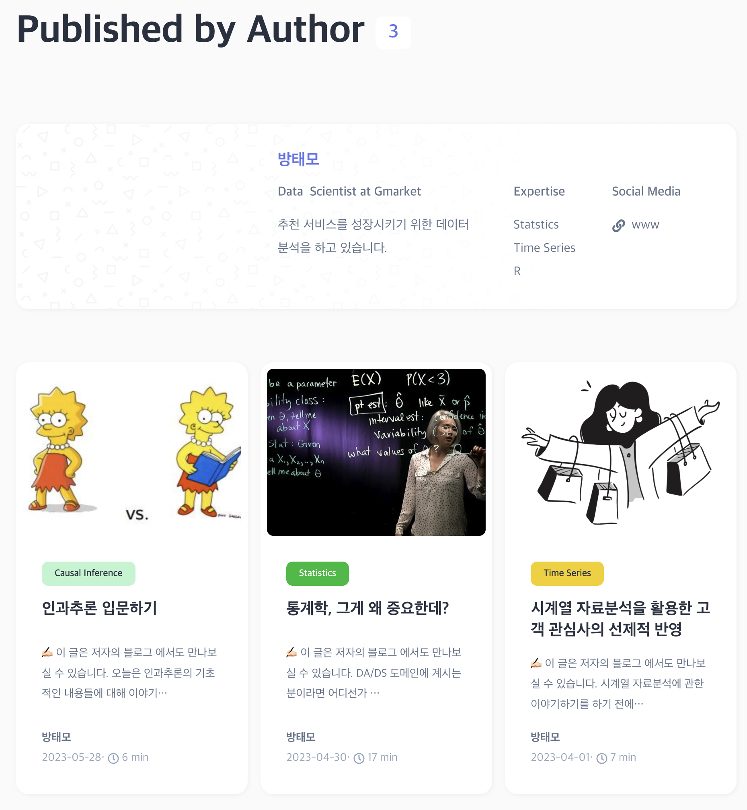
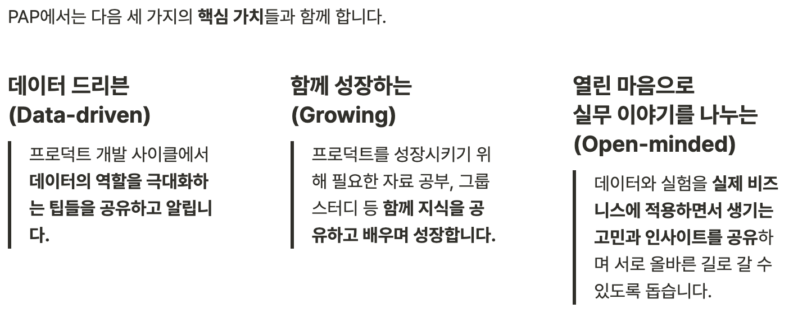
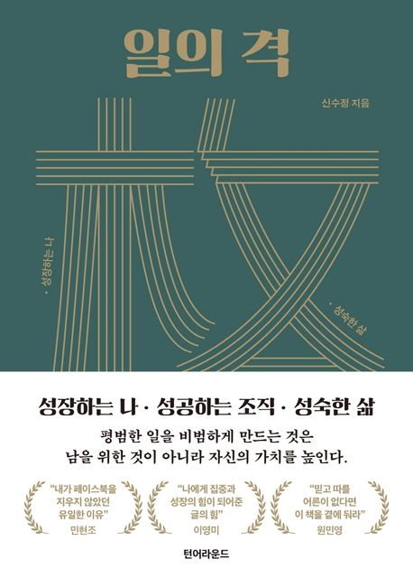
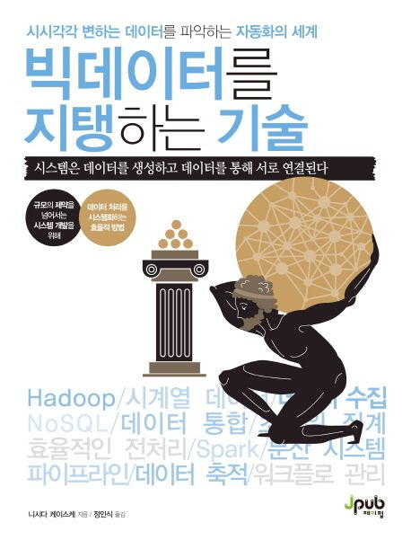

월간 회고록: 5월
문서화의 중요성, PAP 퍼블리셔 3기 후기, 독서

6월 중순에 이사를 하느라 무척이나 바빴다. 이를 핑계삼아 5월의 회고록을 이제서야 작성해본다.
일
문서화의 중요성
문서화의 중요성은 충분히 인지하고 있던 바이지만, 요즘들어 더욱이 피부로 느낀다. 이직 후 그간 나름 착실히 문서화를 해오며 생각해본 바들을 적어본다:
When & What
성공적으로 끝난 일에 대해서만 문서화를 하고있는가? 삽질, 실패로 끝난 일에 대해서도 문서화는 필요하다.
내 능력에 비해 꽤나 어려운 일을 맡고 있는가? 일의 중간중간 문서화를 통한 회고는 많은 도움이 될 수 있다.
사람들이 종종 반복적으로 질문을 하는 것들이 있는가? 이는 해당 부분에 대해 문서화가 필요하다는 명확한 증거이다.
궁금한 것을 동료를 통해 해소했는가? 때에 따라 이 부분에 대한 문서화를 고려해봐도 좋을 것이다.
Why
- 문서화는 궁극적으로 조직의 생산성 증대와 의사소통에 많은 도움을 준다. 협업이 필연적으로 따르는 일을 하는 사람일수록, 조직이 커질수록, 문서화에 들인 시간 대비 생산성, 의사소통에 대한 리턴값은 지수적으로 커질 것이다.
How
Done is better than perfect
- 문서화는 꽤 귀찮은 작업이다. 그러므로, 본인이 편한 형식으로 체계를 잡고 쓰자.
Hierarchy
- 편한 형식으로 쓰되, 혼동을 방지하기 위해 글의 헤더들이나 꼭지들에 대한 Hierarchy는 엄밀하게 지켜주자.
Context
- 다른 건 잘 모르겠는데, 비즈니스 조직에서 모든 문서의 시작은 그 일을 시작하게 된 Context가 되면 좋은 듯하다. 물론, Context에 관한 설명이 필요없는 단순한 Q&A와 같은 글이라면 생략해도 무방하다.
References
- 글을 쓰는 데에 참고한 References가 있다면 문서의 마지막에 기록해두자.
개인
PAP 퍼블리셔 3기 후기
5월 28일 3차 글 제출을 마지막으로 PAP 퍼블리셔 활동이 끝이났다.

4월 1일 첫 글을 시작으로 꽉 채운 2달이 훌쩍 지났구나. 시간 참 빠르다. 그간 봐왔던 PAP 블로그에는 참 좋은 글들이 많아서, 3기 퍼블리셔에 선발되고 난 뒤에 PAP 블로그에 걸맞는 글을 쓸 수 있을까 걱정이 많았는데 나름 잘 마무리한 듯 하다. 나의 아이덴티티를 잘 드러낼 수 있는 글을 쓰고자 했는데 이 또한 달성한 것 같고. 그 증거는 사진 속 내 글을 나타내는 태그 중 Causal Inference를 제외하면 내가 직접 만든 카테고리에 해당한다는 것.😂
데이터 분석에 열정이 있고, 글쓰기에 취미가 있는 사람이라면 한번 쯤 참가해볼 만한 커뮤니티라고 생각한다. 업계에서 활발하게 활동하고 계신 분들을 만날 기회가 있고, 그들과 이야기를 나누다보면 나도 모르게 얻게되는 인사이트가 분명히 존재한다. 무엇보다 퍼블리셔로서 PAP 블로그에 내 글을 내건다는 부분은 좋은 퀄리티의 글을 쓰고 싶게끔 만드는 큰 동기가 된다. 참 즐거운 경험이었다. 현업에서 일에 몰두를 하고 계심에도, 아무런 금전적인 보상없이 이러한 커뮤니티를 운영하고 계시는 운영진 분들이 참 고맙고 존경스럽다.
견고하게 형성되어 있는 개발자 커뮤니티에 반해 데이터 분석/데이터 과학 관련한 커뮤니티는 다른 IT 직군에 비해 사회에 등장한 세월이 길지 않기에 찾아보기가 꽤나 어려웠다. 그나마 형성되어있는 생태계 마저도 해외 유저들을 중심으로 형성이 되어있었다. 이러한 갈증을 느끼던 와중에 PAP라는 커뮤니티가 등장했고, 나는 이 커뮤니티를 눈여겨 볼 수 밖에 없었다. PAP는 단순히 글을 쓰고 퍼나르는 커뮤니티가 아니다. 그래서, 나는 이 커뮤니티를 더욱이 애정할 수 밖에 없다. 그들이 추구하는 가치를 읽어보시라.

DA/DS에 몸을 담고 있는, 몸을 담고 싶은 사람이라면 이 커뮤니티를 애정할 수 밖에 없을 것이다.
독서
일의 격, 신수정 지음

출처: 교보문고 "일"과 "조직", 그리고 "삶"에 대한 의미와 통찰을 알려주는 책
바쁜 현대사회에서 자신만의 목표를 설정하고 쫓는 사람들에게는 진심어린 위로를, "조금 늦은 것이 아닌가?"하며 새로운 시작을 주저하고 있는 사람들에게는 용기를 전해주는 책
나와는 다른 남들을 이해할 수 있는 관점을 제시해주는 책
인생의 너무 늦지 않은 시기에 이런 책을 만난 것은 행운이라 생각한다.
빅데이터를 지탱하는 기술, 니시다 케이스케 지음

출처: 교보문고 빅데이터가 세상에 등장할 수 있었던 이유, 그리고 이들을 실제 산업현장에 활용하기 까지 필요했던 기술들에 대해 알 수 있었던 책
본 책이 출간된 2018년 기준으로 빅데이터를 지탱하는 기술들의 개략적인 현황은 다음과 같았다:
BI 도구(Tableau) 및 대시보드(Redash, Superse, Kibana)
데이터 파이프라인(데이터웨어하우스/마트/레이크)
분산처리시스템(Hadoop, Spark)
분산 데이터 처리를 위한 아키텍쳐(MPP)
데이터 전송 방식 2가지(벌크형, 스트리밍형)
워크플로 관리(Airflow)
클라우드(AWS, GCP)
첫 직장인 병원 연구센터를 떠나, 작년 9월부로 산업계에 몸을 담으며 빅데이터를 지탱하고 있는 수많은 기술들을 눈으로 마주하고 난 뒤에 어리버리를 떨고있었던 내게 꼭 필요했던 책이라 할 수 있다.
특정 기술을 진정으로 이해하기 위해서는 해당 기술이 등장한 Background, Context에 관한 이해가 선행되어야 한다. 앞서 언급한 빅데이터를 지탱하는 기술들이 등장한 맥락에 관한 이해가 되어있지 않은가? 그렇다면 이 책을 꼭 읽어보기를 권한다.
맺음말
2023년 상반기가 저물어간다. 올해 “독서”라는 습관을 들이는 것이 목표였는데, 미약하지만 조금씩 내 삶에 독서가 들어오고 있는 듯 하다. 눈 앞에 놓인 목표를 달성하는데에 급급하게 살아가고 있는 와중에, 내 삶의 장기적인 목표와 꿈에 대해 자꾸만 고민이 든다. 나는 인생에 어떤 “목표”를 갖고 이를 통해 어떤 것을 실현하고 싶은 꿈이 있는가? 삶을 살아가는 데에 꼭 답해야만 하는 질문인가에 대해 묻는다면 의문 부호가 있지만, 나는 저 질문에 명확하게 답을 할 줄 아는 사람이 되고 싶다. 인생 참 어렵다.😂
라이센스
인용
@online{방태모2023,
author = {방태모},
title = {월간 회고록: 5월},
date = {2023-06-30},
url = {https://taemobang.com/posts/2023-06-30-monthly-memory-202305/},
langid = {kr}
}